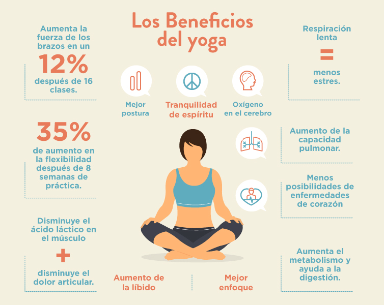
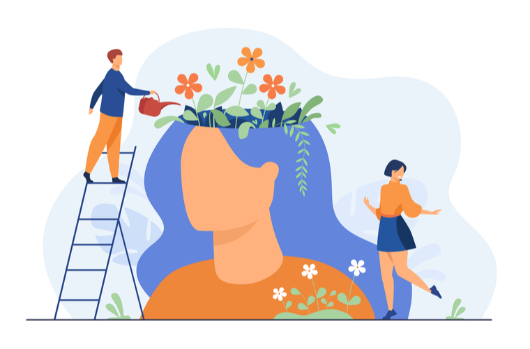

Los beneficios de su estadía en este retiro estan comprobados y asegurados, si bien mucha parte de la experiencia que ofrecemos esta basada en supersticiones y ciencias o teorías no comprobadas, se ha demostrado con el paso del tiempo que muchas de las actividades que realizaremos como el yoga, la meditación o la caminata muestran una mejora no solo en su cuerpo sino que también en su mente, llegando a combatir e incluso tratar problemas de salud tales como la presión arterial o la obesidad, y ayudar con la salud mental, reduciendo con la ansiedad y el estrés. A continuación te dejamos información sobre los beneficios físicos y psicologicos que tendrá esta experiencia en tu cuerpo:
Beneficios físicos
Los beneficios de la meditación son muy variados y su práctica puede ayudarnos en numerosas ocasiones. Gracias a la meditación logramos relajarnos, pues no consiste en concentrarse o enfocarse en los pensamientos. Más bien todo lo contrario. Se trata de soltar y dejar ir la mente, de lograr tranquilidad. Los efectos fisiológicos de practicar la meditación en nuestro organismo son muy concretos. Además, cada vez hay más estudios clínicos y científicos que avalan la existencia de dichos efectos. La ventaja de la meditación es que puedes practicar muchas formas diferentes y que la mayoría no requieren de un equipo especializado ni de demasiado espacio. Para practicarlo sólo necesitas unos minutos al día. Cuando meditas, puedes despejar la sobrecarga de información que se acumula todos los días y contribuye a tu estrés. A medio camino entre una actividad deportiva y un método de meditación, la práctica del yoga cautiva a quien la ejercita, todos los asiduos afirman que les ha cambiado la vida. ¿Lo mejor? La progresión en los movimientos la marcas tú y guiada por un buen maestro que mida las posibilidades de cada uno, es una disciplina para todos los públicos, de 0 a 90 años. La pérdida de peso, la obtención de un cuerpo fuerte y flexible, evidenciar una piel saludable y aquietar la mente son algunos de los objetivos que muchas personas se plantean alcanzar en diferentes etapas de la vida. Todos ellos, sin embargo, pueden ser conseguidos en forma conjunta y natural a través de la práctica diaria de yoga. A menudo, el yoga es parcialmente comprendido como una disciplina limitada a la realización de posturas físicas. Desde esta perspectiva, su utilidad se percibe únicamente a nivel físico, pasando por alto los beneficios que ofrece en el plano mental-espiritual. Caminar es sencillo y ofrece muchos beneficios, especialmente para las personas con un estilo de vida sedentario. Caminar es fácil, gratis y suave para las articulaciones. No existe duda alguna de que caminar sea bueno para mantener un estado de salud óptimo. Caminar es una actividad física de tipo aeróbico. Las personas que acostumbran a caminar tienen menos grasa corporal que las que no caminan, además de reducir el riesgo de coágulos en la sangre; ya que, al momento de caminar por el movimiento biomecánico del cuerpo, la pantorrilla actúa como una bomba sanguínea, contrayendo y bombeando la sangre desde los pies y las piernas al corazón, disminuyendo el esfuerzo cardiaco. Al momento de elegir un ejercicio físico adecuado, que ayude a sentirse feliz y saludable, caminar es la mejor opción. Una buena caminata al día puede ayudar mucho más que ir al gimnasio de forma esporádica. La constancia en las caminatas diarias puede asegurar resultados impresionantes. Algunos de los beneficios físicos de estas actividades son:
- Bajar la frecuencia cardíaca
- Bajar la presión arterial en reposo
- Mejorar la calidad del sueño
- Mejora de la memoria
- Ayudar a la digestión y flexibilidad
Beneficios psicologicos
Pintar mandalas es un método de relajación y concentración que proviene de Oriente. Y además, está de moda. Se ven mandalas en fachadas de edificios, en portadas de libros, incluso la gente se los tatúa en el cuerpo. No obstante, mucha gente desconoce que la creación de mandalas y/o colorear mandalas es altamente beneficioso para nuestro equilibrio emocional, nos ayuda a mantener un estado de concentración que despierta nuestros sentidos e ilumina nuestra creatividad. Tanto es así que hasta observar imágenes de mandalas o fotos de mandalas puede inducirnos a un estado de relajación. Colorear mandalas no solo es cosa de juegos infantiles. La terapia con mandalas para niños y para adultos cuenta con múltiples beneficios y es una forma de arteterapia. Tengamos la edad que tengamos, armar una libreta llena de siluetas y rellenarlas con colores, o incluso crear nuestros propios diseños de mandalas para pintar nos sumerge en un estado que nos aporta múltiples ventajas. Imaginación, libertad creativa y muy pocos materiales: las manualidades son actividades muy asequibles, tanto en clase como en casa para que los más pequeños se entretengan y desarrollen valiosas habilidades. Animarlos a hacer cosas por ustedes mismos es nuestra tarea, y algo que traerá muchas ventajas a su desarrollo. Fomentar las manualidades y mandalas les ayudará no solo a potenciar su creatividad, su paciencia, su capacidad de concentración o su psicomotricidad. También regulará los niveles de estrés, reforzará su autoestima, mejorará sus habilidades sociales y de trabajo en equipo. Algunos de los beneficios en la psiquis del armado de mandalas y amuletos, e incluso de actividades mas físicas como la meditacion y el yoga son los siguientes:
- Reduce los niveles de estrés y ansiedad
- Ayuda a la expresión e identificación de emociones
- Refuerza tu autoestima
- Fomenta la creatividad
- Combate a la depresión y sus síntomas